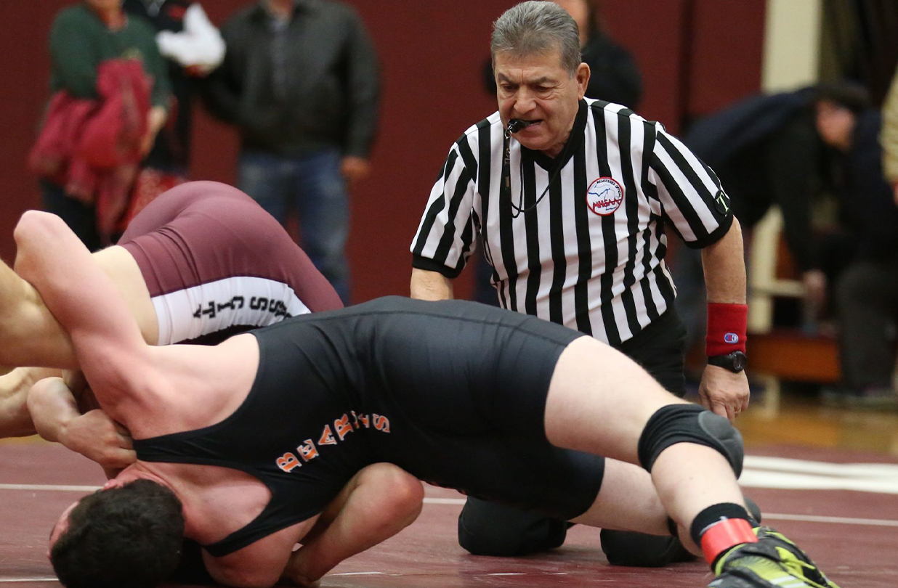

<!DOCTYPE html>
<html>
   <head>
       <meta charset="utf-8">
       <meta http-equiv="X-UA-Compatible" content="IE=edge">
       <title>Wrestling Project</title>
       <meta name="description" content="wresting description project">
       <meta name="viewport" content="width=device-width, initial-scale=1">
       <!-- STYLE SHEETS -->
       <link href="https://cdn.jsdelivr.net/npm/bootstrap@5.1.3/dist/css/bootstrap.min.css" rel="stylesheet" integrity="sha384-1BmE4kWBq78iYhFldvKuhfTAU6auU8tT94WrHftjDbrCEXSU1oBoqyl2QvZ6jIW3" crossorigin="anonymous">
       <link rel="stylesheet" href="https://cdn.jsdelivr.net/npm/bootstrap-icons@1.5.0/font/bootstrap-icons.css">
        <link rel="stylesheet" href="style.css">
       <!-- JAVASCRIPT -->
       <script src="https://cdn.jsdelivr.net/npm/bootstrap@5.1.3/dist/js/bootstrap.bundle.min.js" integrity="sha384-ka7Sk0Gln4gmtz2MlQnikT1wXgYsOg+OMhuP+IlRH9sENBO0LRn5q+8nbTov4+1p" crossorigin="anonymous"></script>
   </head>
   <body>

   </body>
</html>

<!-- NAVIGATION -->
<nav class="navbar navbar-expand-lg navbar-dark bg-dark custom-navbar">
    <div class="container-fluid">

        <a class="navbar-brand custom-brand" href="index.html">
            <span class="brand-box">
    Wrestling
    <span class="num-green">1</span>0<span class="num-red">1</span>
    
</span>
        </a>

        <button class="navbar-toggler" type="button" data-bs-toggle="collapse" 
                data-bs-target="#navbarSupportedContent" aria-controls="navbarSupportedContent" 
                aria-expanded="false" aria-label="Toggle navigation">
            <span class="navbar-toggler-icon"></span>
        </button>

        <div class="collapse navbar-collapse" id="navbarSupportedContent">
            <ul class="navbar-nav ms-auto mb-2 mb-lg-0">
                <li class="nav-item"><a class="nav-link" href="#">Home</a></li>
                <li class="nav-item"><a class="nav-link" href="#">Link</a></li>
                <li class="nav-item"><a class="nav-link" href="#">About</a></li>
            </ul>
        </div>

    </div>
</nav>


    <div class="faq-logo-wrapper">
        
    </div>


    <div align="center">
  <h1>Wrestling 101, For begineers</h1>
  <p>Wrestling is one of the world's oldest combat sports. All wrestling styles share the same basic idea: use technique, leverage, and control to take an opponent down and keep them from escaping or attacking.
However, each style has different rules, scoring, and strategies.</p>
</div>  

<div align="center"> 
    <h1>Rules Explained</h1>
    <p>Want to learn the rules, and know how things work on the mat?</p>
    </div>
</div>

<div class="ref-logo-wrapper">
    
</div>

<div align="left"> 
    <h1>Freestyle Rules</h1>
    <p>Freestyle wrestling rules involve two 3-minute periods where wrestlers score points by performing moves like takedowns, exposures, and reversals. The match ends in a fall if one wrestler pins the opponent's shoulders to the mat for one second, or by technical superiority if a 10-point lead is reached. If there is no fall or technical superiority, the wrestler with the most points at the end wins. 
</p> 
<p>Fall (Pin): A fall ends the match immediately and occurs when both shoulders of the opponent are held on the mat for one second. 
Technical Superiority: A match ends when a wrestler builds a 10-point lead. 
Takedown: 2 points for bringing an opponent to the mat. 
Exposure: 2 points for forcing an opponent onto their back for a few seconds, with a 4-point "danger position" possible for more effective or longer exposures. 
Reversal: 1 point for taking control from the bottom position. 
Step Out: 1 point when an opponent's foot goes out of bounds. 
Penalty: 1 point is awarded for illegal actions or passivity. 
</p>

<div align="left"> 
    <h1>Greco-Roman Rules</h1>
    <p>Greco-Roman wrestling rules involve two 3-minute periods where wrestlers score points by performing moves like throws, exposures, and reversals. The match ends in a fall if one wrestler pins the opponent's shoulders to the mat for one second, or by technical superiority if a 8-point lead is reached. If there is no fall or technical superiority, the wrestler with the most points at the end wins. 
</p> 
<p>Key Rules & Objective

    Objective: Pin the opponent (shoulders to mat) or score more points within two three-minute periods.
    No Leg Contact: Strictly forbidden to grab, trip, or use legs to attack or defend below the waistline.
    Upper Body Focus: Emphasis on throws, lifts, and holds using arms, shoulders, and torso
</p>

<div align="left"> 
    <h1>Folkstyle Rules</h1>
    <p>Folkstyle wrestling rules focus on controlling opponents from neutral, offensive, and defensive positions, awarding points for takedowns (2 pts), escapes (1 pt), reversals (2 pts), and near falls (back exposure), with the ultimate goal of a pin both shoulder blades down for 2 seconds 
</p> 
<p>Key rules include headgear use, specific penalties for illegal holds (like head-only cradles), and emphasizing control and mat position, making it distinct from Freestyle's emphasis on big throws. Matches have three periods, with high school at 2-minute rounds and college at a 3-minute first period and two 2-minute rounds
</p>
    </div>
</div>

<div align="center"> 
    <h1>Technique Explained</h1>
    <p>Alright now, you got the hang of the rules. Do you want to learn some basic technqiue to dominate your matches on the mat?</p>
    </div>
</div>
<div class="ref-logo-wrapper">
    
</div>

<div align="left"> 
    <h1>Basic Techniques</h1>
    <p>Basic wrestling techniques
focus on a solid stance and motion, using level changes, and mastering fundamental takedowns like the single/double leg, coupled with crucial defenses like sprawling and positional control through ties (collar, underhook, wrist) and escapes. Key skills involve creating openings with fakes/drills (snap-downs), finishing shots, and transitioning from offense to defense or vice versa to control the mat and score points 
</p> 
<p>Wrestling takedowns involve various offensive moves to get your opponent to the mat, including popular
leg attacks like the Single Leg, Double Leg, and High Crotch, as well as throws such as the Fireman's Carry, Hip Toss, and Suplex
</p>


    

<head>
    <meta charset="UTF-8">
    <meta name="viewport" content="width=device-width, initial-scale=1.0">
    <title>YouTube Grid</title>
    <link rel="stylesheet" href="style.css">

<head>
    <meta charset="UTF-8">
    <meta name="viewport" content="width=device-width, initial-scale=1.0">
    <title>YouTube Grid</title>
    <link rel="stylesheet" href="style.css">
</head>
<body>

    <div class="video-grid">
        <div class="video-box">
            <iframe src="https://www.youtube.com/watch?v=Bugf5PXVt-8" allowfullscreen></iframe>
        </div>
        <div class="video-box">
            <iframe src="https://www.youtube.com/watch?v=LsxnzFXJBPY&t=448s" allowfullscreen></iframe>
        </div>
        <div class="video-box">
            <iframe src="https://www.youtube.com/watch?v=0q4-YtB2eFU" allowfullscreen></iframe>
        </div>
        <div class="video-box">
            <iframe src="https://www.youtube.com/watch?v=vxjyRXZoDUo" allowfullscreen></iframe>
        </div>
        <div class="video-box">
            <iframe src="https://www.youtube.com/watch?v=WcXQ3RtvMM0" allowfullscreen></iframe>
        </div>
        <div class="video-box">
            <iframe src="https://youtu.be/k0k_zZ4x2NA?si=oOsdQ1QgCjtjzqaq" allowfullscreen></iframe>
        </div>
    </div>

</body>
</html>


    <!-- Bootstrap JS -->
    <script src="https://cdn.jsdelivr.net/npm/bootstrap@5.3.0/dist/js/bootstrap.bundle.min.js"></script>

</body>
</html>


